Storia e società
1853 schede in italiano sul tema «Storia e società», pronte da stampare e con soluzioni.
1.853 materiali
Classe

Terra sottratta al mare – Scheda: testo con spazi vuoti, comprensione all'ascolto e crucipuzzle

Terra – Scheda: testo con spazi vuoti, comprensione all'ascolto e crucipuzzle

Temporale – Scheda: testo con spazi vuoti, comprensione all'ascolto e crucipuzzle
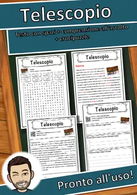
Telescopio – Scheda: testo con spazi vuoti, comprensione all'ascolto e crucipuzzle
Teheran – Scheda: testo con spazi vuoti, comprensione all'ascolto e crucipuzzle
Tauromachia – Scheda: testo con spazi vuoti, comprensione all'ascolto e crucipuzzle
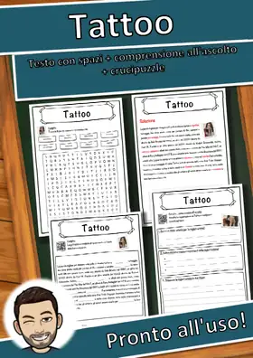
Tattoo – Scheda: testo con spazi vuoti, comprensione all'ascolto e crucipuzzle
Tastiera elettronica – Scheda: testo con spazi vuoti, comprensione all'ascolto e crucipuzzle
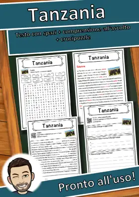
Tanzania – Scheda: testo con spazi vuoti, comprensione all'ascolto e crucipuzzle
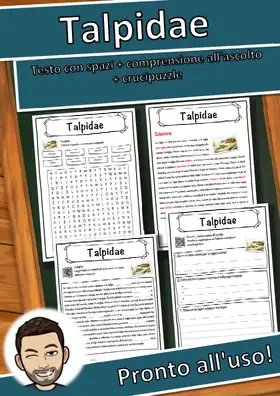
Talpidae – Scheda: testo con spazi vuoti, comprensione all'ascolto e crucipuzzle
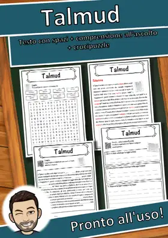
Talmud – Scheda: testo con spazi vuoti, comprensione all'ascolto e crucipuzzle
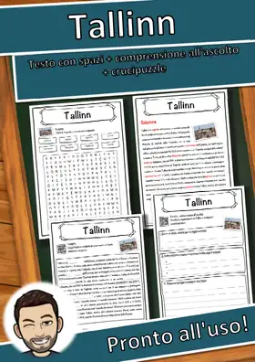
Tallinn – Scheda: testo con spazi vuoti, comprensione all'ascolto e crucipuzzle
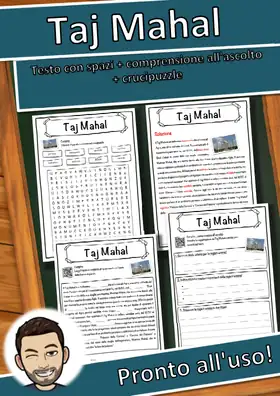
Taj Mahal – Scheda: testo con spazi vuoti, comprensione all'ascolto e crucipuzzle
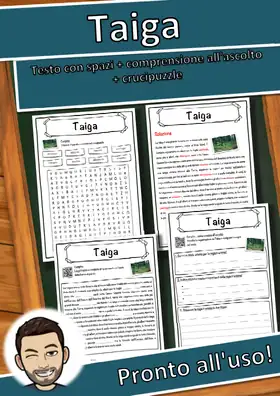
Taiga – Scheda: testo con spazi vuoti, comprensione all'ascolto e crucipuzzle
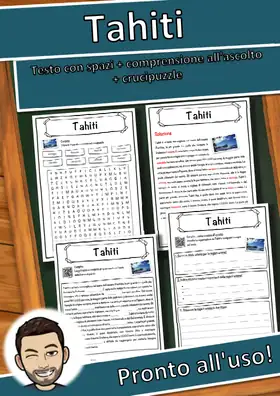
Tahiti – Scheda: testo con spazi vuoti, comprensione all'ascolto e crucipuzzle
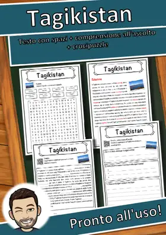
Tagikistan – Scheda: testo con spazi vuoti, comprensione all'ascolto e crucipuzzle
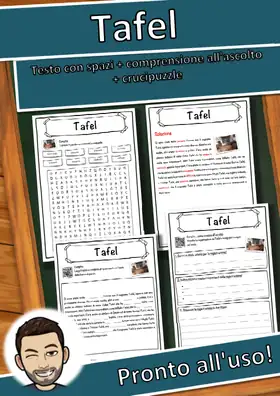
Tafel – Scheda: testo con spazi vuoti, comprensione all'ascolto e crucipuzzle
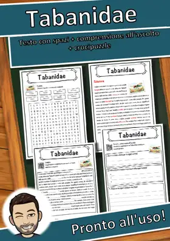
Tabanidae – Scheda: testo con spazi vuoti, comprensione all'ascolto e crucipuzzle
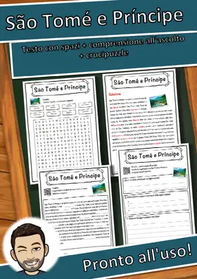
São Tomé e Príncipe – Scheda: testo con spazi vuoti, comprensione all'ascolto e crucipuzzle
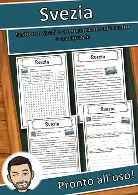
Svezia – Scheda: testo con spazi vuoti, comprensione all'ascolto e crucipuzzle
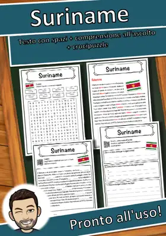
Suriname – Scheda: testo con spazi vuoti, comprensione all'ascolto e crucipuzzle
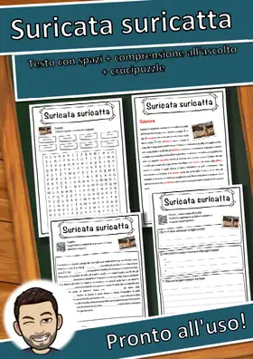
Suricata suricatta – Scheda: testo con spazi vuoti, comprensione all'ascolto e crucipuzzle
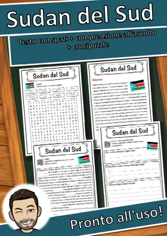
Sudan del Sud – Scheda: testo con spazi vuoti, comprensione all'ascolto e crucipuzzle
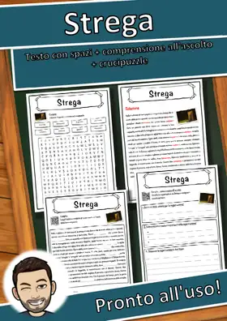
Strega – Scheda: testo con spazi vuoti, comprensione all'ascolto e crucipuzzle
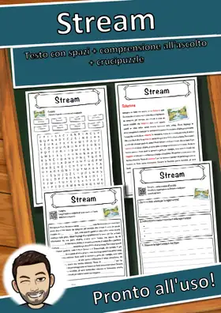
Stream – Scheda: testo con spazi vuoti, comprensione all'ascolto e crucipuzzle
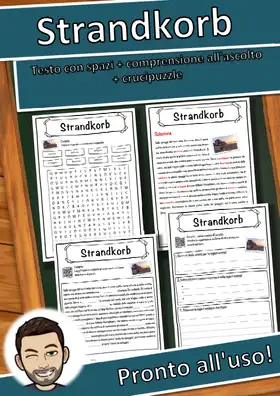
Strandkorb – Scheda: testo con spazi vuoti, comprensione all'ascolto e crucipuzzle
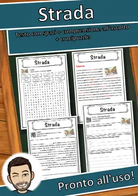
Strada – Scheda: testo con spazi vuoti, comprensione all'ascolto e crucipuzzle
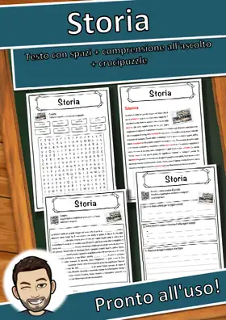
Storia – Scheda: testo con spazi vuoti, comprensione all'ascolto e crucipuzzle
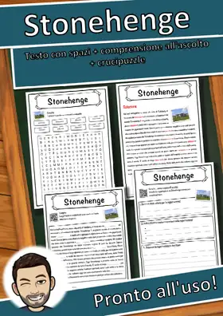
Stonehenge – Scheda: testo con spazi vuoti, comprensione all'ascolto e crucipuzzle
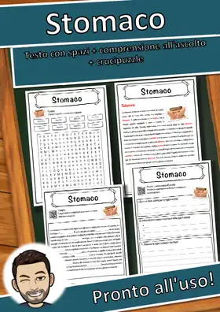
Stomaco – Scheda: testo con spazi vuoti, comprensione all'ascolto e crucipuzzle
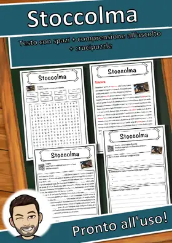
Stoccolma – Scheda: testo con spazi vuoti, comprensione all'ascolto e crucipuzzle
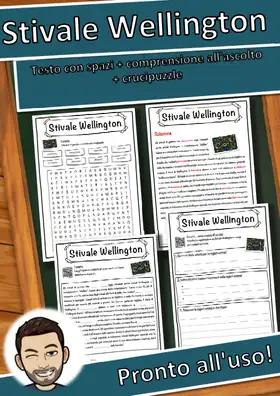
Stivale Wellington – Scheda: testo con spazi vuoti, comprensione all'ascolto e crucipuzzle
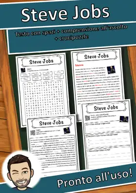
Steve Jobs – Scheda: testo con spazi vuoti, comprensione all'ascolto e crucipuzzle
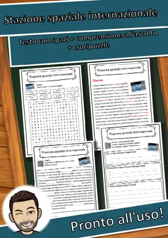
Stazione spaziale internazionale – Scheda: testo con spazi vuoti, comprensione all'ascolto e crucipuzzle
Stazione di servizio – Scheda: testo con spazi vuoti, comprensione all'ascolto e crucipuzzle
Statua della Libertà – Scheda: testo con spazi vuoti, comprensione all'ascolto e crucipuzzle
Stampa 3D – Scheda: testo con spazi vuoti, comprensione all'ascolto e crucipuzzle
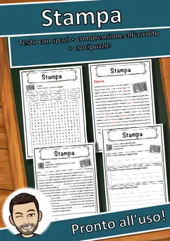
Stampa – Scheda: testo con spazi vuoti, comprensione all'ascolto e crucipuzzle
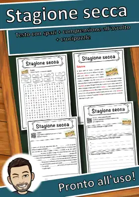
Stagione secca – Scheda: testo con spazi vuoti, comprensione all'ascolto e crucipuzzle
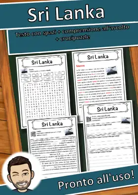
Sri Lanka – Scheda: testo con spazi vuoti, comprensione all'ascolto e crucipuzzle
Squalius cephalus – Scheda: testo con spazi vuoti, comprensione all'ascolto e crucipuzzle
Spätzle – Scheda: testo con spazi vuoti, comprensione all'ascolto e crucipuzzle
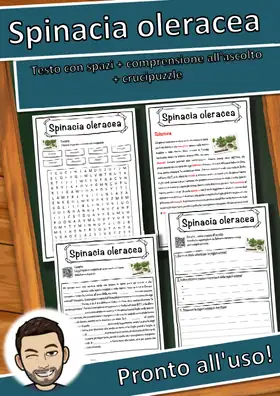
Spinacia oleracea – Scheda: testo con spazi vuoti, comprensione all'ascolto e crucipuzzle
Spiel des Jahres – Scheda: testo con spazi vuoti, comprensione all'ascolto e crucipuzzle
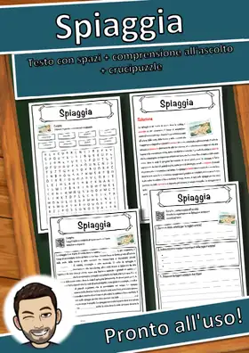
Spiaggia – Scheda: testo con spazi vuoti, comprensione all'ascolto e crucipuzzle
Spheniscidae – Scheda: testo con spazi vuoti, comprensione all'ascolto e crucipuzzle
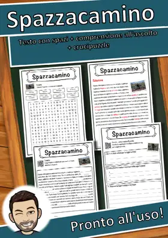
Spazzacamino – Scheda: testo con spazi vuoti, comprensione all'ascolto e crucipuzzle
Sparta – Scheda: testo con spazi vuoti, comprensione all'ascolto e crucipuzzle
Nessun materiale trovato: prova con un'altra parola o un altro filtro.